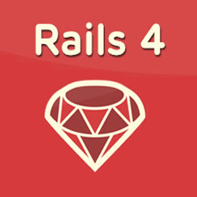

Martin Rodriguez
|  |
bundle install
bundle update
bundle update <gem name>
bower update
npm install -g bower
// .bowerrc
{
"directory": "vendor/assets/components"
}
bower init # creates bower.json
{
"name": "BowerAndRails",
"authors": [
"Martin Rodriguez <merodriguezblanco@gmail.com>"
],
"description": "Testing Bower on Rails 4",
"main": "",
"moduleType": [
"amd"
],
"license": "MIT",
...
"dependencies": {
"backbone": "~1.2.3"
}
}
bower install
config.assets.paths << Rails.root.join('vendor', 'assets', 'components')
# app/assets/javascripts/application.js
//= require underscore/underscore
//= require backbone/backbone
Bower: list, search, install, update front-end dependencies like you would do for your ruby gems.